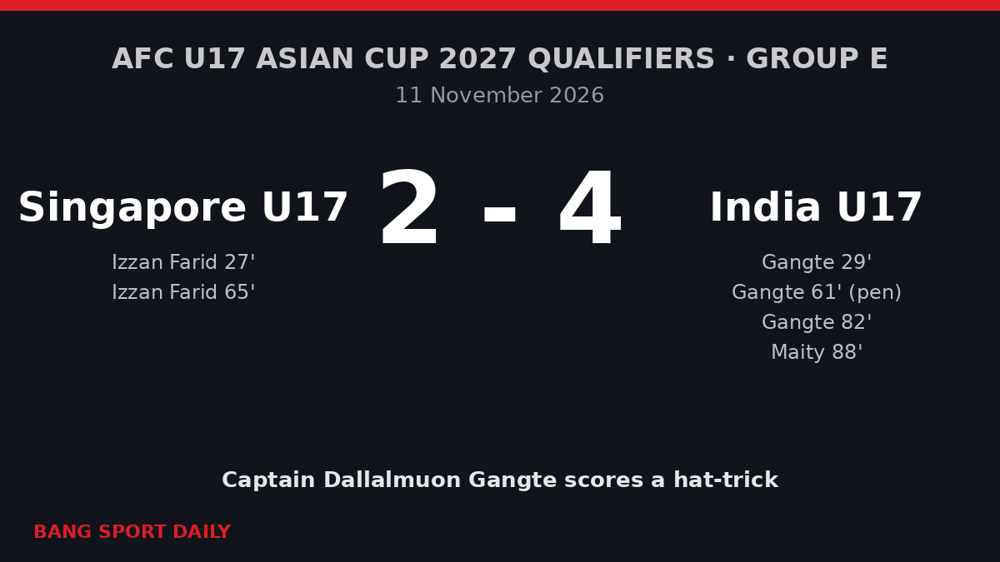

甘特上演帽子戏法 印度U17逆转4比2击败新加坡
在吉隆坡进行的2027年U17亚洲杯预选赛E组首轮中，印度队长连进三球，带领球队逆转取胜。

赛事经过
2026年11月11日星期三，在吉隆坡足球场进行的2027年U17亚洲杯预选赛E组首轮比赛中，印度U17队在先失一球的情况下以4比2逆转击败新加坡队。队长达拉尔穆恩·甘特（Dallalmuon Gangte）上演帽子戏法。
第27分钟，印度后卫解围迟缓，新加坡的伊赞·法里德（Izzan Farid）近距离破门，帮助球队取得领先。两分钟后，甘特接塞莱克斯·奥伊南的挑传，转身摆脱防守后左脚低射近角得手，将比分扳平。上半场双方1比1战平。

第61分钟，赫里希克什·查兰·马纳瓦蒂在禁区内被侵犯，甘特主罚点球命中，印度反超比分。四分钟后，法里德利用角球头球破门，新加坡再度扳平。第82分钟，替补登场的大卫·芒刚·伊罗姆射门被门将伊尔汉·雷扎尔扑出，甘特补射得手，完成帽子戏法。第88分钟，另一名替补里斯蒂克·迈蒂（Ristik Maity）推射空门，将比分锁定为4比2。
比赛意义
E组共有五支球队，只有小组第一能够晋级2027年5月12日至29日在乌兹别克斯坦举行的决赛圈，几乎没有丢分的余地。同轮另一场比赛中，巴勒斯坦5比0大胜关岛，凭借净胜球优势在首轮过后暂列小组第一。由梅赫拉朱丁·瓦杜（Mehrajuddin Wadoo）执教的印度队力争连续两届打进决赛圈——2025年11月，他们在艾哈迈达巴德以2比1击败伊朗，获得了2026年决赛圈资格。
关键数据
- 比分： 新加坡 2比4 印度（半场1比1）。
- 印度进球： 甘特 第29分钟、第61分钟（点球）、第82分钟；迈蒂 第88分钟。
- 新加坡进球： 伊赞·法里德 第27分钟、第65分钟。
- 比赛地点： 马来西亚吉隆坡足球场。
下一步
印度队将于11月14日迎战关岛，11月17日对阵巴勒斯坦，11月20日挑战东道主马来西亚。与巴勒斯坦的比赛很可能决定小组头名的归属。印度队的所有比赛均在FAMTV Malaysia的YouTube频道直播。